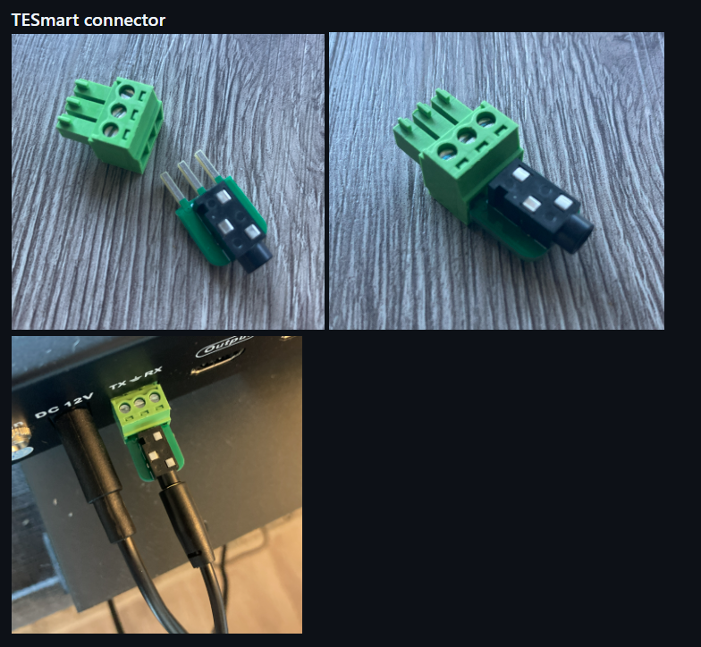
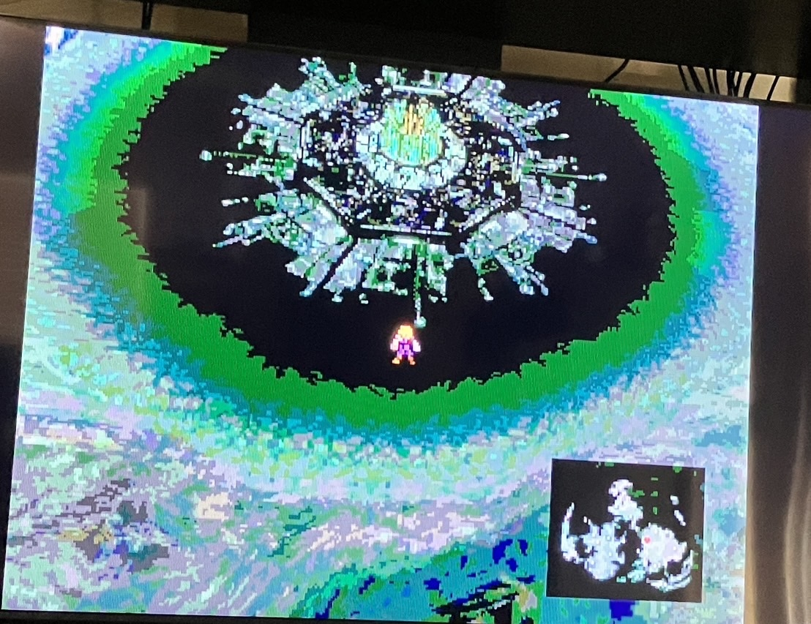
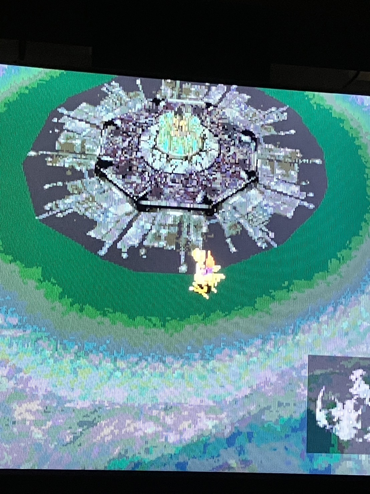
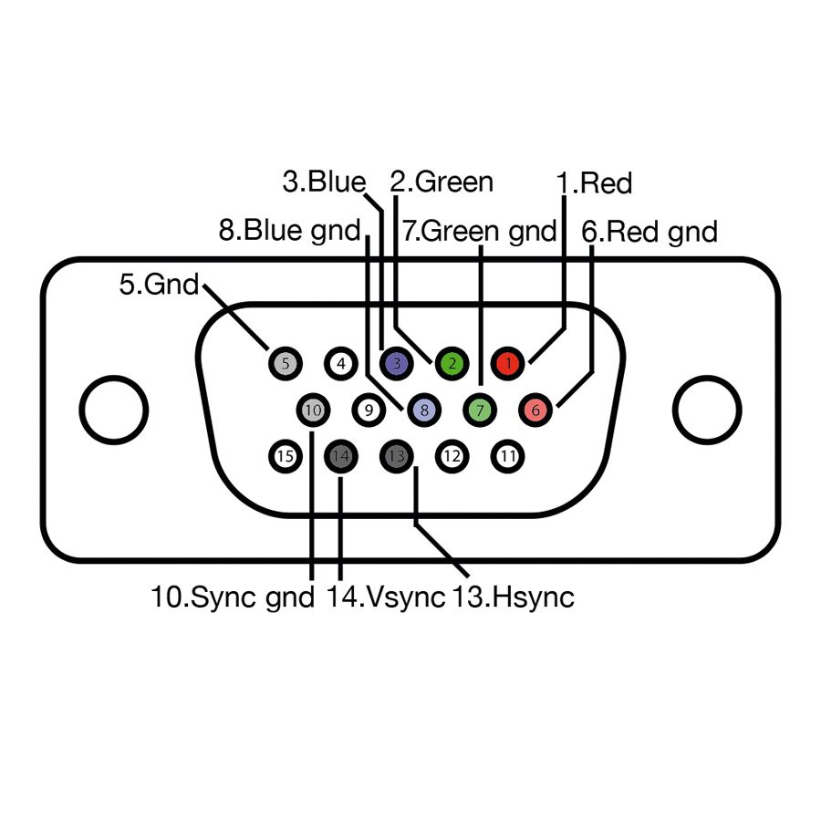

[DRAFT] Experience with the Donut Dongle for the RetroTINK 4K [DRAFT]
Hello everyone!
[THIS IS A DRAFT. I'VE UPLOADED THIS JUST FOR THE SAKE OF NOT HAVING TO MOVE IT AROUND ON A THUMB DRIVE LIKE A WEIRDO.]
A few short firmware updates ago, the RetroTINK 4K unlocked the ability to interpret serial commands from either unused pins in the HD-15 port or the USB-C port.
This ability was mostly advertised to pair with the Scalable Video Switch (SVS) by Arthrimus for output auto-detection and profile auto-switching, but it doesn't quite stop anyone from interfacing with the RT4K via serial, SVS or no.
User donutswdad (https://github.com/svirant) decided to take that challenge and was able to find a way to interface with various other analog switches through various means- the gSCART, Otaku Games Scart, Extron switch.
While only the Extron outputs any serial data out of the box, with clever engineering it's still possible to tell the active output on the other switches, which allows for...
The Donut Dongle!
I'm going to be very reductive for the sake of not being overly technical, but the device is essentially a hub, and a translator. Let's put it this way: even if a switch was outputting serial and was saying which output was active, that doesn't mean the RetroTINK will be able to tell what it means.
The Donut Dongle fills this void. It receives the output from the switches (be it serial or voltage detection), translating it to something the RetroTINK can understand. This works to let the Donut Dongle change RetroTINK profiles automatically.
Recently, donutswdad found that the TESmart 16-port HDMI switch also output serial commands through its RS232 (serial) port using a custom connector to change up the RS232 to a 3.5mm jack (like the headphone plug). What this means, is... the Donut Dongle can take its serial output, and pipe it into the RetroTINK.

(Image source: donutswdad)
The TESmart switch just so happens to be the switch I use daily. All the systems I use already output HDMI, or are modded for true digital-to-digital HDMI, so having integration with the Donut Dongle is phenomenal.
After mentioning it a couple times in the RetroTINK Discord server, donutswdad was gracious enough to reach out to me and offer me a tester kit. While he did mention it's probably all good to go with just plug-and-play, it's always worth it to have someone else verify. I mean, you won't catch me complaining!
So, why would I want the Donut Dongle for a digital source?
The auto-profile function is very useful for analog sources, because a lot of them do really require profiles for stuff like source control (RGB, YPbPr, VGA, etc), as well as fine-grained control. Gain, phase. There's a lot of specific tweaking that analog sources need.
Digital sources... don't quite need all of that, for the most part. All of that is coming down from the console / HDMI source. Even with software emulation (eg. N64 VC on Wii U, etc) it's weird to use the pre-scale option to auto-load a profile. I guess, unless I had a weird N64 VC-only Wii U. One I'm definitely using with pre-scaling is the PS Classic, though!
One very important part of HDMI signals is the RGB range. There's a few different color standards, but RGB ranges I'm typically going to be thinking about are Limited and Full range RGB.
Brightness of a picture is "dictated" by the RGB value. In what is known as "Full" range, you have the full spectrum of values: from 0 to 255. 0 is fully black, 255 is fully white. Everything in between in a shade. "Limited" range is... as it implies, limited. From 16 to 235. So, it misses a few things.
Why is this important? That's simple... sometimes, consoles mess up. Instead of the console outputting Full Range and telling your TV or RetroTINK it's doing that, it outputs Full Range and reports Limited Range. This results in some colors looking darker than they should, and some dark scenes to look darker than they were meant to be.
Off the top of my head: the PS Classic does this and the Steam Deck dock does this. If you configure the PS3 or Xbox 360 to output Full Range, it just forgets to update your EDID and tells the sink that it's outputting Limited Range. You can configure the RetroTINK (or your TV) to override the EDID and just interpret the signal as Full. But...
That's a pain! I'm not gonna remember that every time! I just wanna sit down and play! It's annoying to be playing and think "damn, that looks off" and sit there staring like an idiot for a few minutes until I realize the RGB range is off!
That's where the Donut Dongle comes in. It's a very similar use case to what analog systems are doing. Correcting the signal and making sure it's as best as it can be.
Look at these, for example. This is Final Fantasy VII running on the PS Classic:

That is a Full Range RGB image represented as Limited Range. Look at the minimap, at the area around Midgar... It's black, but it's not right. It's not meant to look like that.

It's meant to look like this! Look at that difference- the minimap is transparent, not black, and the area around Midgar is dark green. The pictures might not look great because I just took them with my phone quickly, but you get the point.
Let's recap. We connect the TEsmart switch to the Donut Dongle, and the Donut Dongle to the RetroTINK. What I will be doing is setting up profiles for myself that, when an input is selected on the switch, will automatically be selected by the Donut Dongle and have the RGB range overriden. This will make it so I don't have to manually do all that stuff all the time, or remember!
It's not just that, though... I could set up the profiles to have a specific CRT filter, or a certain type of sync... It's allowing me to easily configure settings without me having to manually select them, every time.
The TEsmart switch has an auto-switching function (made the $200 bullet a little bit nicer). But I wonder, what if it didn't? If we have a serial connection to the switch, we can *tell* the switch what input to use. But hang on, can the RetroTINK even *send* serial commands?
Good observation! No!
The Donut Dongle has the capability of taking IR inputs from the RetroTINK controller, and pipe them into the RetroTINK via serial input. It essentially acts like an IR broker here. But since it's a middleman, and already connected to our switch, could we potentially send commands to it, using the RetroTINK controller?
The aforementioned is not something that the Donut Dongle has been made for, but yes, it's possible. In fact: the basic RetroTINK 4K IR receiver allows for the 1-12 buttons on the remote to be used to load configurable profiles. The Donut Dongle allows you to double up on these, by pressing AUX8 (which is an unused button in the RT4K remote) and pressing one of the 1-12 buttons. So, instead of just 1-12, you have 1-12 AND AUX8 + 1-12, allowing for 24 profiles from a controller macro. I'll be real though... that's a lot of remembering. I'm a big fan of having the capability, but I'm unsure if I'll use it all that often, personally. A huge positive from having an external IR receiver is having a little more control on where to aim. While I haven't personally experienced it, I've read a good chunk of RetroTINK 4K users mention that the IR receiver doesn't work all that well.
Back to the main topic, though. At some point, if I have time, I would love to research using the Donut Dongle to send the TEsmart serial commands.
The Donut Dongle is powered by an Arduino Nano. It's capable of taking up to four inputs at a time: two gSCART switches, and any combination of either two TEsmart, two Extron, or one of each.
As it receives the data, it outputs it to a 3.5mm jack, which goes to one of two: either a VGA passthrough plug, or an Enhanced S-Video plug. Something like this:
Insert picture here
I was given a choice between the two, but I asked for the VGA passthrough plug from donutswdad. The plug essentially functions like so:

Source: techradar.com
This is the standard VGA pinout. Note that this plug has a few unused pins. The ones labelled 12 and 15 are used for serial out and serial in, respectively.
We can take advantage of this: using this passthrough plug, we can, quite literally, just pass through the signal from the VGA source to the RetroTINK without interference, and inject serial commands, which are received from the Donut Dongle via a 3.5mm jack. To recap, we're going from the switch, to the Donut Dongle, to the RetroTINK.
Something that makes the VGA passthrough dongle great as well is the fact that any other things using the VGA port, such as the Enhanced S-Video dongle by LaserBear Industries, are able to be used without interference. Quite literally, it's just the same plug.
Big fan of this. It makes me very happy to be able to have an option added.
I'll now talk a bit of the configuration I've made to this device.
Absolutely none! I don't have it yet! LOL
See you next week!
Thanks for reading! If you need to contact me for any reason, please feel free to email me at aru@hoshikawa-aru.com.